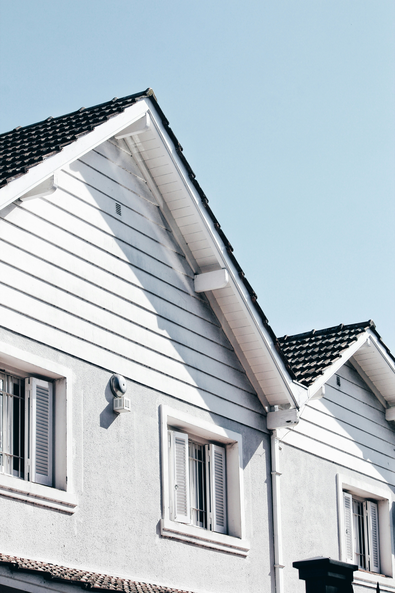
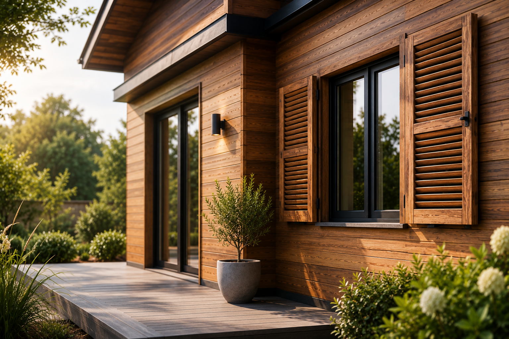
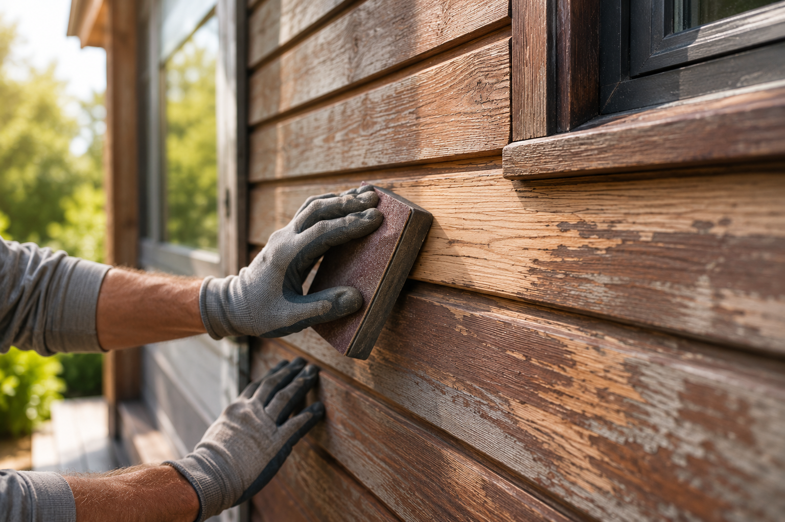
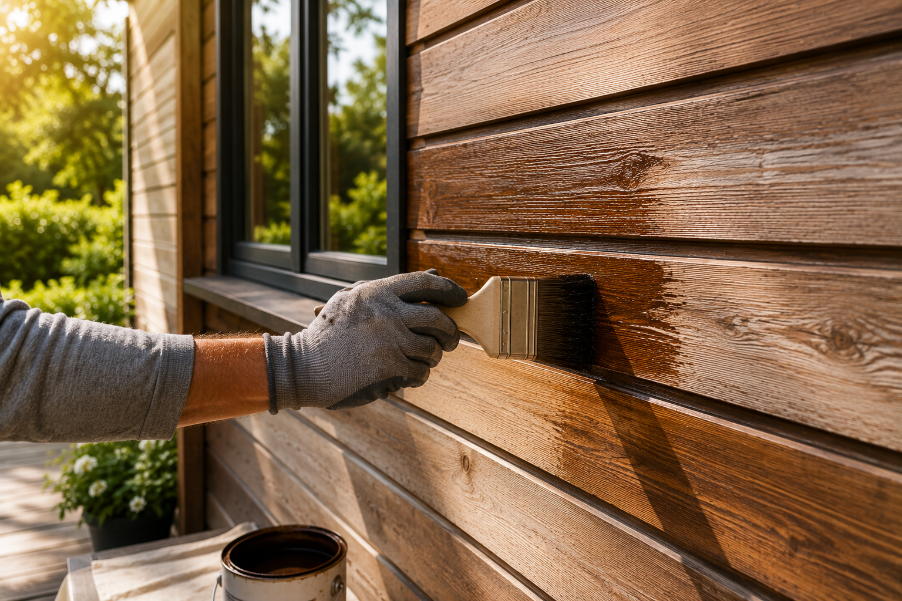

01
Facade Painting
Professional exterior painting for houses, buildings and commercial properties using durable coating systems.
Learn More →
Professional exterior painting with careful preparation, weather-resistant coatings and durable finishes designed to protect your building and maintain its long-term value.
SCROLL

Exterior painting is not only about improving appearance. The right preparation, materials and coatings protect your facade from weather conditions, improve durability and help preserve the value of your property.
Paint alone does not create a premium surface. The difference comes from preparation, materials and professional execution.
 BEFORE
BEFORE
 AFTER
AFTER
From preparation to final coating, we provide professional exterior solutions that protect buildings and create durable, high-quality surfaces.
Professional exterior painting for houses, buildings and commercial properties using durable coating systems.
Learn More →
Protection and maintenance solutions for wooden facades, shutters and exposed exterior elements.
Learn More →
Cleaning, repairs, sanding and preparation work to create the perfect base for a lasting finish.
Learn More →
Professional repairs and restoration before painting to ensure a clean and stable exterior surface.
Learn More →
Weather-resistant coating systems designed to protect exterior surfaces against environmental conditions.
Learn More →
Regular care and renewal solutions to maintain the appearance and condition of your property.
Learn More →A professional exterior finish does more than improve appearance. It helps protect your building and maintain its condition.
Protecting facades against rain, sunlight, moisture and changing weather conditions.
Maintaining the appearance and condition of your property through professional exterior care.
High-quality preparation and coatings create durable exterior finishes.
A refreshed facade creates a clean and well-maintained impression.
Every exterior project follows a structured process to achieve reliable and long-lasting results.
We discuss your project goals, requirements and expectations.
We inspect the facade, identify requirements and evaluate the existing condition.
The surface is checked carefully to determine the right preparation and coating system.
Cleaning, repairs, filling and preparation create the ideal foundation.
Suitable primers and exterior coatings are applied professionally.
We review the completed work and ensure everything meets expectations.
Every building requires a suitable coating system. We select materials based on surface type, weather exposure, building condition and the desired finish.
Breathable coating systems designed for durable and natural exterior surfaces.
Protective finishes developed to withstand rain, sunlight and changing weather conditions.
Professional solutions selected according to facade condition and long-term protection requirements.
Specialized protection for wooden facades, shutters and exposed exterior elements.

Exterior maintenance is not only about appearance. Professional preparation, repairs and suitable coatings help protect the building, maintain its condition and preserve the long-term value of your property.
Discover Property Preservation →Whether it is a single facade, residential building or commercial property, we provide personal advice and a transparent offer tailored to your project.